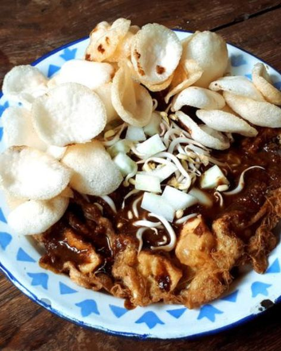
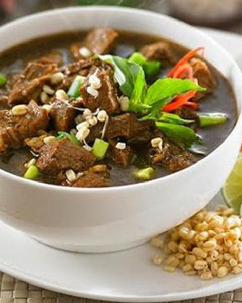
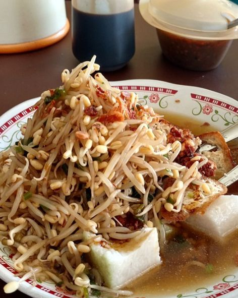

Food



"Happiness is what you think, what you say, and what you do are in harmony"
Many regional foods come from Surabaya. Some examples can be seen from left to right, there are tahu tek, rawon, and Lontong Balap.
"Happiness is what you think, what you say, and what you do are in harmony"
Many regional foods come from Surabaya. Some examples can be seen from left to right, there are tahu tek, rawon, and Lontong Balap.